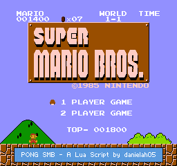
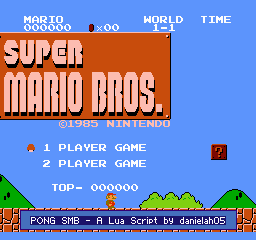
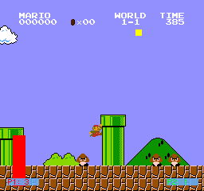
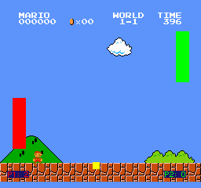

A SMB lua script made to force you to play pong, while beating SMB.
This is made for BOTH Mesen and FCEUX, but using the Mesen version is recommended.
Mesen Lua File (Right click and "Save Link as")


